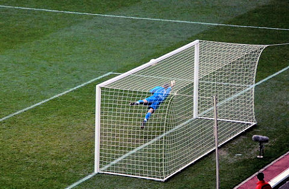
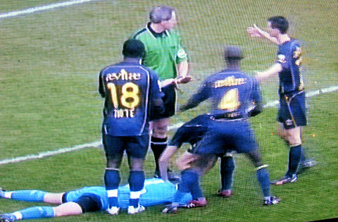
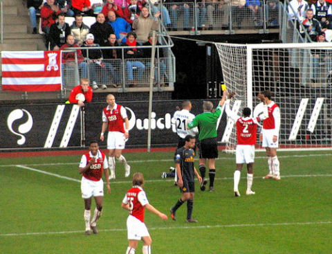
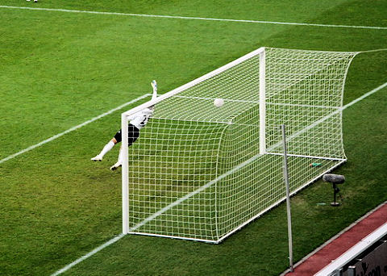
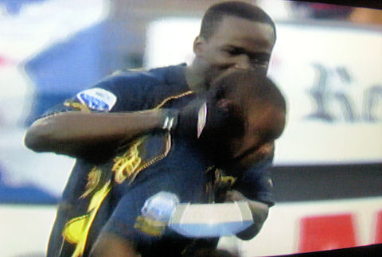
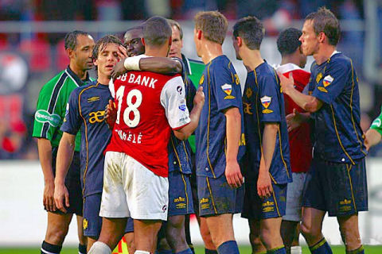

AZ komt snel op voorsprong. Nadat Ari op de paal schiet krijgt Pellè
de bal na
een ingooi in bezit. Kah stopt onvoldoende af waarna de Italiaan
de bal op Castro's
lichaam schiet. Daarbij raakt hij met zijn knie het
gezicht van de Belgische keeper
die enigszins geschrokken de bal loslaat
waarna Pellé het aldus verkregen
cadeau verzilvert:1-0,(5'). Een dubieus
doelpunt.
foto sv-online.info.nl

Protesten bij Van Egmond halen niks uit.

Schijnovertreding van Lamah wordt bestraft met geel.

Uit een vrije trap van Hadouir kopt Yulu-Matondo de gelijkmaker in: 1-1,
(53').
foto sv-online.info.nl

Eindelijk weer eens een goal van Matondo waarvoor uitbundige felicitaties.

Beide ploegen krijgen nog enkele goede kansen maar het blijft 1-1.